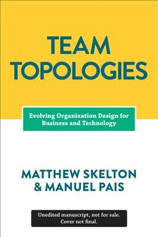

Team Topologies book available now to pre-order!
The book significantly expands the DevOps Topologies to cover dynamic team design patterns and interactions.
Visit TeamTopologies.com for updates or subscribe to the Team Topologies newsletter.

The DevOps Topologies collection of patterns (diagrams and descriptions) by Matthew Skelton and Manuel Pais is licensed under a Creative Commons Attribution-ShareAlike 4.0 International License. Based on the work at: http://blog.matthewskelton.net/2013/10/22/what-team-structure-is-right-for-devops-to-flourish
Introduction
The primary goal of any DevOps effort within an organisation is to improve the delivery of value for customers and the business, not in itself to reduce costs, increase automation, or drive everything from configuration management; this means that different organisations might need different team structures in order for effective Dev and Ops collaboration to take place.
Summary
Exactly which DevOps team structure or topology will suit an organisation depends on several things:
The product set of the organisation: fewer products make for easier collaboration, as there will be fewer natural silos, as predicted by Conway’s Law.
The extent, strength, and effectiveness of technical leadership; whether Dev and Ops have a shared goal.
Whether an organisation has the capability or appetite to change its IT Operations department from ‘racking hardware’ and ‘configuring servers’ to real alignment with the value stream, and for operational features to be taken seriously by software teams.
Whether the organisation has the capacity or skills to take the lead on operational concerns.
Of course, there are variations on the themes outlined here; the topologies and types are meant as a reference guide or heuristic for assessing which patterns might be appropriate. In reality, a combination of more than one pattern, or one pattern transforming into another, will often be the best approach.
So what team structure is right for DevOps to flourish? Clearly, there is no magic conformation or team topology which will suit every organisation. However, it is useful to characterise a small number of different models for team structures, some of which suit certain organisations better than others. By exploring the strengths and weaknesses of these team structures (or ‘topologies’), we can identify the team structure which might work best for DevOps practices in our own organisations, taking into account Conway’s Law.
Most of these DevOps topologies have been described elsewhere before; in particular, Lawrence Sweeney of CollabNet goes into useful detail in a comment on Ben Kepes’s blog about what I characterise here as Anti-Type B (DevOps Team Silo), Type 3 (Ops as IaaS), and Type 1 (Dev and Ops Collaboration). The DevOpsGuys have a list of Twelve DevOps Anti-Patterns, and Jez Humble, Gene Kim, Damon Edwards (and many others) have said similar things. I have added here three additional ‘topologies’ which I’ve not seen or heard discussed much (Shared Ops, DevOps-as-a-Service, and Temp DevOps Team).
DevOps Anti-Types
It’s useful to look at some bad practices, what we might call ‘anti-types’ (after the ubiquitous ‘anti-pattern‘).
Anti-Type A: Dev and Ops Silos
This is the classic ‘throw it over the wall’ split between Dev and Ops. It means that story points can be claimed early (DONE means ‘feature-complete’, but not working in Production), and software operability suffers because Devs do not have enough context for operational features and Ops folks do not have time or inclination to engage Devs in order to fix the problems before the software goes live.
We likely all know this topology is bad, but I think there are actually worse topologies; at least with Anti-Type A (Dev and Ops Silos), we know there is a problem.
Anti-Type B: DevOps Team Silo
The DevOps Team Silo (Anti-Type B) typically results from a manager or exec deciding that they “need a bit of this DevOps thing” and starting a ‘DevOps team’ (probably full of people known as ‘a DevOp‘). The members of the DevOps team quickly form another silo, keeping Dev and Ops further apart than ever as they defend their corner, skills, and toolset from the ‘clueless Devs’ and ‘dinosaur Ops’ people.
The only situation where a separate DevOps silo really makes sense is when the team is temporary, lasting less than (say) 12 or 18 months, with the express purpose of bringing Dev and Ops closer together, and with a clear mandate to make the DevOps team superfluous after that time; this becomes what I have called a Type 5 DevOps Topology.
Anti-Type C: Dev Don't Need Ops
This topology is borne of a combination of naivety and arrogance from developers and development managers, particularly when starting on new projects or systems. Assuming that Ops is now a thing of the past (“we have the Cloud now, right?”), the developers wildly underestimate the complexity and importance of operational skills and activities, and believe that they can do without them, or just cover them in spare hours.
Such an Anti-Type C DevOps topology will probably end up needing either a Type 3 (Ops as IaaS) or a Type 4 (DevOps-as-a-Service) topology when their software becomes more involved and operational activities start to swamp ‘development’ (aka coding) time. If only such teams recognised the importance of Operations as a discipline as important and valuable as software development, they would be able to avoid much pain and unnecessary (and quite basic) operational mistakes.
Anti-Type D: DevOps as Tools Team
In order to "become DevOps" without losing current dev teams velocity (read delivery of functional stories), a DevOps team is set up to work on the tooling required for deployment pipelines, configuration management, environment management, etc. Meanwhile Ops folks continue to work in isolation and Dev teams continue to throw them applications "over the wall".
Although the outcomes of this dedicated team can be beneficial in terms of an improved tool chain, its impact is limited. The fundamental problem of lack of early Ops involvement and collaboration in the application development lifecycle remains unchanged.
Anti-Type E: Rebranded SysAdmin
This anti-type is typical in organizations with low engineering maturity. They want to improve their practices and reduce costs, yet they fail to see IT as a core driver of the business. Because industry successes with DevOps are now evident, they want to "do DevOps" as well. Unfortunately, instead of reflecting on the gaps in the current structure and relationships, they take the elusive path of hiring "DevOps engineers" for their Ops team(s).
DevOps becomes just a rebranding of the role previously known as SysAdmin, with no real cultural/organizational change taking place. This anti-type is becoming more and more widespread as unscrupulous recruiters jump on the bandwagon searching for candidates with automation and tooling skills. Unfortunately, it's the human communication skills that can make DevOps thrive in an organization.
Anti-Type F: Ops Embedded in Dev Team
The organization does not want to keep a separate Ops team, so development teams take responsibility for infrastructure, managing environments, monitoring, etc. However, doing so in a project or product-driven way means those items are subject to resource constraints and re-prioritizations which lead to subpar approaches and half-baked solutions.
In this anti-type the organization shows lack of appreciation for the importance and skills required for effective IT operations. In particular, the value of Ops is diminished because it's treated as an annoyance for Devs (as Ops is managed by a single Dev team manager with other priorities).
Thanks to Scott Prugh for suggesting clarifications on how Anti-Type F differs from Type 2.
Anti-Type G: Dev and DBA Silos
This is a form of Anti-Type A (Dev and Ops Silos) which is prominent in medium-to-large companies where multiple legacy systems depend on the same core set of data. Because these databases are so vital for the business, a dedicated DBA team, often under the Ops umbrella, is responsible for their maintenance, performance tuning and disaster recovery. That is understandable. The problem is when this team becomes a gate keeper for any and every database change, effectively becoming an obstacle to small and frequent deployments (a core tenet of DevOps and Continuous Delivery).
Furthermore, just like Ops in Anti-Type A, the DBA team is not involved early in the application development, thus data problems (migrations, performance, etc) are found late in the delivery cycle. Coupled with the overload of supporting multiple applications databases, the end result is constant firefighting and mounting pressure to deliver.
DevOps Team Topologies
In opposition to the anti-types, we can look at some topologies in which DevOps can be made to work.
Type 1: Dev and Ops Collaboration
This is the ‘promised land’ of DevOps: smooth collaboration between Dev teams and Ops teams, each specialising where needed, but also sharing where needed. There are likely many separate Dev teams, each working on a separate or semi-separate product stack.
My sense is that this Type 1 model needs quite substantial organisational change to establish it, and a good degree of competence higher up in the technical management team. Dev and Ops must have a clearly expressed and demonstrably effective shared goal (‘Delivering Reliable, Frequent Changes’, or whatever). Ops folks must be comfortable pairing with Devs and get to grips with test-driven coding and Git, and Devs must take operational features seriously and seek out Ops people for input into logging implementations, and so on, all of which needs quite a culture change from the recent past.
Type 1 suitability: an organisation with strong technical leadership.
Potential effectiveness: HIGH
Type 2: Fully Shared Ops Responsibilities
Where operations people have been integrated in product development teams, we see a Type 2 topology. There is so little separation between Dev and Ops that all people are highly focused on a shared purpose; this is arguable a form of Type 1 (Dev and Ops Collaboration), but it has some special features.
Organisations such as Netflix and Facebook with effectively a single web-based product have achieved this Type 2 topology, but I think it’s probably not hugely applicable outside a narrow product focus, because the budgetary constraints and context-switching typically present in an organisation with multiple product streams will probably force Dev and Ops further apart (say, back to a Type 1 model). This topology might also be called ‘NoOps‘, as there is no distinct or visible Operations team (although the Netflix NoOps might also be Type 3 (Ops as IaaS)).
Type 3: Ops as Infrastructure-as-a-Service (Platform)
For organisations with a fairly traditional IT Operations department which cannot or will not change rapidly [enough], and for organisations who run all their applications in the public cloud (Amazon EC2, Rackspace, Azure, etc.), it probably helps to treat Operations as a team who simply provides the elastic infrastructure on which applications are deployed and run; the internal Ops team is thus directly equivalent to Amazon EC2, or Infrastructure-as-a-Service.
A team (perhaps a virtual team) within Dev then acts as a source of expertise about operational features, metrics, monitoring, server provisioning, etc., and probably does most of the communication with the IaaS team. This team is still a Dev team, however, following standard practices like TDD, CI, iterative development, coaching, etc.
The IaaS topology trades some potential effectiveness (losing direct collaboration with Ops people) for easier implementation, possibly deriving value more quickly than by trying for Type 1 (Dev and Ops Collaboration) which could be attempted at a later date.
Type 3 suitability: organisations with several different products and services, with a traditional Ops department, or whose applications run entirely in the public cloud.
Potential effectiveness: MEDIUM
Type 4: DevOps as an External Service
Some organisations, particularly smaller ones, might not have the finances, experience, or staff to take a lead on the operational aspects of the software they produce. The Dev team might then reach out to a service provider like Rackspace to help them build test environments and automate their infrastructure and monitoring, and advise them on the kinds of operational features to implement during the software development cycles.
What might be called DevOps-as-a-Service could be a useful and pragmatic way for a small organisation or team to learn about automation, monitoring, and configuration management, and then perhaps move towards a Type 3 (Ops as IaaS) or even Type 1 (Dev and Ops Collaboration) model as they grow and take on more staff with operational focus.
Type 5: DevOps Team with an Expiry Date
The DevOps Team with an Expiry Date (Type 5) looks substantially like Anti-Type B (DevOps Team Silo), but its intent and longevity are quite different. This temporary team has a mission to bring Dev and Ops closer together, ideally towards a Type 1 (Dev and Ops Collaboration) or Type 2 (Fully Shared Ops Responsibilities) model, and eventually make itself obsolete.
The members of the temporary team will ‘translate’ between Dev-speak and Ops-speak, introducing crazy ideas like stand-ups and Kanban for Ops teams, and thinking about dirty details like load-balancers, management NICs, and SSL offloading for Dev teams. If enough people start to see the value of bringing Dev and Ops together, then the temporary team has a real chance of achieving its aim; crucially, long-term responsibility for deployments and production diagnostics should not be given to the temporary team, otherwise it is likely to become a DevOps Team Silo (Anti-Type B).
Type 5 suitability: as a precursor to Type 1 topology, but beware the danger of Anti-Type B.
Potential effectiveness: LOW to HIGH
Type 6: DevOps Evangelists Team
Within organisations that have a large gap between Dev and Ops (or the tendency towards a large gap), it can be effective to have a 'facilitating' DevOps team that keeps the Dev and Ops sides talking. This is a version of Type 5 (DevOps Team with an Expiry Date) but where the DevOps team exists on an ongoing basis with the specific remit of facilitating collaboration and cooperation between Dev and Ops teams. Members of this team are sometimes called 'DevOps Evangelists', because they help to spread awareness of DevOps practices.
Type 7: SRE Team (Google Model)
DevOps often recommends that Dev teams join the on-call rotation, but it's not essential. In fact, some organisations (including Google) run a different model, with an explicit 'hand-off' from Development to the team that runs the software, the Site Reliability Engineering (SRE) team. In this model, the Dev teams need to provide test evidence (logs, metrics, etc.) to the SRE team showing that their software is of a good enough standard to be supported by the SRE team.
Crucially, the SRE team can reject software that is operationally substandard, asking the Developers to improve the code before it is put into Production. Collaboration between Dev and SRE happens around operational criteria but once the SRE team is happy with the code, they (and not the Dev team) support it in Production.
Type 7 suitability: Type 7 is suitable only for organisations with a high degree of engineering and organisational maturity. Beware of a return to Anti-Type A if the SRE/Ops team is told to "JFDI" deploy.
Potential effectiveness: LOW to HIGH
Type 8: Container-Driven Collaboration
Containers remove the need for some kinds of collaboration between Dev and Ops by encapsulating the deployment and runtime requirements of an app into a container. In this way, the container acts as a boundary on the responsibilities of both Dev and Ops. With a sound engineering culture, the Container-Driven Collaboration model works well, but if Dev starts to ignore operational considerations this model can revert towards to an adversarial 'us and them'.
Type 9: Dev and DBA Collaboration
In order to bridge the Dev-DBA chasm, some organisations have experimented with something like Type 9, where a database capability from the DBA team is complimented with a database capability (or specialism) from the Dev team. This seems to help to translate between the Dev-centric view of databases (as essentially dumb persistence stores for apps) and the DBA-centric view of databases (smart, rich sources of business value).
Type 9 suitability: for organisations with one or more large, central databases with multiple connected applications.
Potential effectiveness: MEDIUM